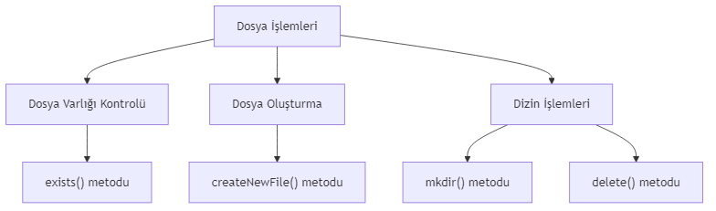
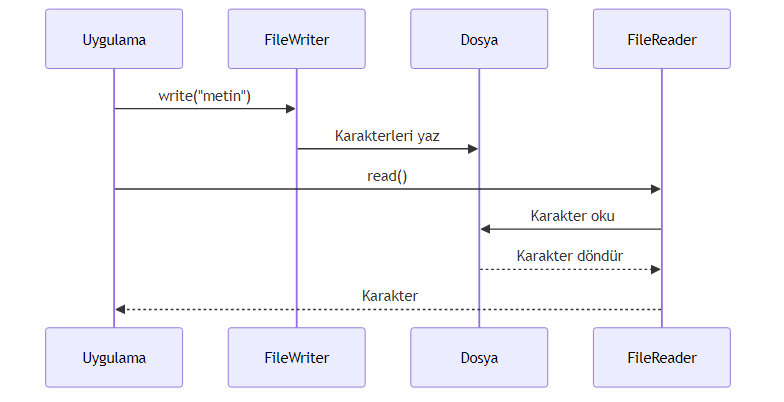
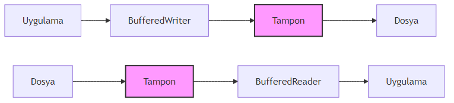
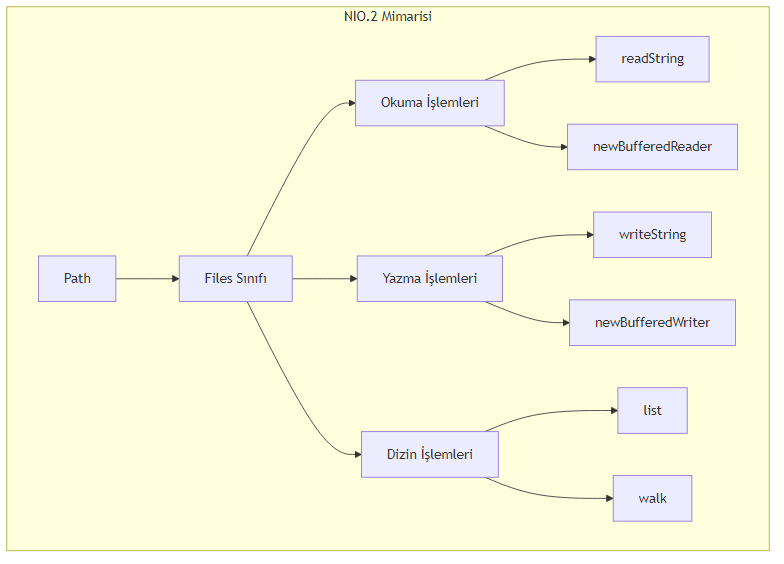
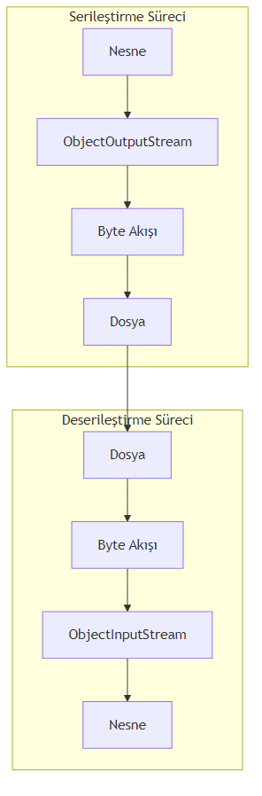

File, FileReader/Writer, BufferedReader/BufferedWriter, NIO.2 ve Serileştirme
2025-01-18
Bu bölümde, Java programlama dilinde dosya işlemlerini ve kalıcı veri saklama yöntemlerini adım adım öğreneceksiniz. Geleneksel java.io paketinden modern NIO.2 yaklaşımına kadar geniş bir yelpazede konuları ele alacağız. Ayrıca, nesnelerinizi dosyalara kaydetmek ve geri yüklemek için serileştirme (serialization) kavramını keşfedeceksiniz.
[!NOTE] Bu bölümdeki tüm kod örnekleri Java 11 veya üzeri sürümlerle uyumludur. NIO.2 örneklerinde
Files.readString()veFiles.writeString()gibi Java 11 ile gelen kolaylıklar kullanılmıştır.
File Sınıfı ve Dosya Sistemi ile EtkileşimJava’da dosya sistemiyle etkileşim kurmanın en temel yolu java.io.File sınıfıdır. Bu sınıf, dosya ve dizin yollarını temsil eder; ancak dosya içeriğini okuma veya yazma işlemleri için doğrudan kullanılmaz. File sınıfı daha çok dosya metaverisine erişim, dosya oluşturma/silme ve dizin işlemleri için kullanılır.
Aşağıdaki örnekte, File sınıfını kullanarak bir dosyanın var olup olmadığını kontrol edecek, yoksa yeni bir dosya oluşturacak ve ardından bir dizin oluşturacağız.
import java.io.File;
import java.io.IOException;
public class FileExample {
public static void main(String[] args) {
// Dosya yolu tanımlama
File file = new File("ornek.txt");
// Dosya varlığını kontrol etme
if (!file.exists()) {
try {
// Dosya oluşturma
if (file.createNewFile()) {
System.out.println("Dosya oluşturuldu: " + file.getAbsolutePath());
}
} catch (IOException e) {
System.err.println("Dosya oluşturulurken hata: " + e.getMessage());
}
} else {
System.out.println("Dosya zaten mevcut: " + file.getAbsolutePath());
}
// Dosya metaverisine erişim
System.out.println("Dosya boyutu: " + file.length() + " bayt");
System.out.println("Son değiştirilme: " + file.lastModified());
// Dizin oluşturma
File dizin = new File("yeni_dizin");
if (dizin.mkdir()) {
System.out.println("Dizin oluşturuldu: " + dizin.getAbsolutePath());
} else {
System.out.println("Dizin oluşturulamadı veya zaten mevcut.");
}
// Dizini silme (opsiyonel)
if (dizin.delete()) {
System.out.println("Dizin silindi: " + dizin.getAbsolutePath());
}
}
}File sınıfı, dosya sistemiyle temel etkileşimler için yeterlidir. Ancak aşağıdaki sınırlamaları nedeniyle daha gelişmiş sınıflara ihtiyaç duyulur:
File sınıfı yalnızca metaveri işlemleri için tasarlanmıştır.createNewFile() gibi metotlar IOException fırlatır ancak bazı işlemler için yeterli değildir.[!TIP]
Filesınıfı yerine, daha modern ve esnek olanjava.nio.file.Pathvejava.nio.file.Filessınıflarını kullanmayı tercih edin. Bu konuyu Bölüm 4’te detaylı olarak ele alacağız.

## 16.2 Karakter Tabanlı Okuma/Yazma:FileReader ve FileWriter
Metin dosyalarıyla çalışırken karakter akışları (character streams) kullanılır. java.io paketindeki FileReader ve FileWriter sınıfları, metin dosyalarına okuma ve yazma işlemleri için temel karakter akışı sınıflarıdır.
Aşağıdaki örnekte, FileWriter ile bir metin dosyasına yazacak ve FileReader ile okuyacağız.
import java.io.FileReader;
import java.io.FileWriter;
import java.io.IOException;
public class FileReaderWriterExample {
public static void main(String[] args) {
String dosyaAdi = "metin.txt";
// Dosyaya yazma
try (FileWriter writer = new FileWriter(dosyaAdi)) {
writer.write("Merhaba, Java dosya işlemleri!\n");
writer.write("Bu bir test satırıdır.\n");
System.out.println("Dosyaya yazma başarılı.");
} catch (IOException e) {
System.err.println("Yazma hatası: " + e.getMessage());
}
// Dosyadan okuma
try (FileReader reader = new FileReader(dosyaAdi)) {
int karakter;
System.out.println("Dosya içeriği:");
while ((karakter = reader.read()) != -1) {
System.out.print((char) karakter);
}
} catch (IOException e) {
System.err.println("Okuma hatası: " + e.getMessage());
}
}
}FileReader ve FileWriter sınıfları basit metin işlemleri için kullanışlıdır. Ancak aşağıdaki dezavantajları vardır:
Charset.defaultCharset()), bu farklı platformlarda sorun çıkarabilir.[!WARNING]
FileReaderveFileWritersınıflarını doğrudan kullanmak yerine, bir sonraki bölümde göreceğinizBufferedReaderveBufferedWriterile sarmalayarak kullanmanız önerilir.

## 16.3 Tamponlu Okuma/Yazma:BufferedReader ve BufferedWriter
Tamponlama (buffering), performansı artırmak için kullanılan bir tekniktir. BufferedReader ve BufferedWriter sınıfları, karakter akışlarını tamponlayarak daha verimli okuma/yazma işlemleri sağlar.
FileReader gibi bir karakter akışını sarmalayarak tamponlu okuma sağlar.FileWriter gibi bir karakter akışını sarmalayarak tamponlu yazma sağlar.Aşağıdaki örnekte, BufferedWriter ile bir dosyaya yazacak ve BufferedReader ile satır satır okuyacağız.
import java.io.BufferedReader;
import java.io.BufferedWriter;
import java.io.FileReader;
import java.io.FileWriter;
import java.io.IOException;
public class BufferedReaderWriterExample {
public static void main(String[] args) {
String dosyaAdi = "buyuk_metin.txt";
// Dosyaya yazma
try (BufferedWriter writer = new BufferedWriter(new FileWriter(dosyaAdi))) {
writer.write("Birinci satır");
writer.newLine(); // Platform bağımsız satır sonu
writer.write("İkinci satır");
writer.newLine();
writer.write("Üçüncü satır");
System.out.println("Dosyaya yazma başarılı.");
} catch (IOException e) {
System.err.println("Yazma hatası: " + e.getMessage());
}
// Dosyadan okuma
try (BufferedReader reader = new BufferedReader(new FileReader(dosyaAdi))) {
String satir;
System.out.println("Dosya içeriği (satır satır):");
while ((satir = reader.readLine()) != null) {
System.out.println(satir);
}
} catch (IOException e) {
System.err.println("Okuma hatası: " + e.getMessage());
}
}
}Tamponlu sınıfların sağladığı avantajlar:
readLine() metodu ile satır satır okuma yapılabilir.newLine() metodu, işletim sistemine uygun satır sonu karakterini ekler.[!TIP]
BufferedReaderveBufferedWritersınıflarını kullanırken, varsayılan tampon boyutu (8192 karakter) genellikle yeterlidir. Ancak özel durumlar için farklı boyutlar belirleyebilirsiniz:new BufferedReader(reader, 16384)

## 16.4 Modern Dosya İşlemleri: NIO.2 (Path, Files, BufferedReader/BufferedWriter)
Java 7 ile birlikte gelen NIO.2 (New I/O 2) paketi, dosya işlemleri için daha modern, esnek ve güvenilir bir yaklaşım sunar. java.nio.file paketindeki Path ve Files sınıfları, geleneksel IO’ya göre birçok avantaj sağlar.
Paths.get() metodu ile oluşturulur.Aşağıdaki örnekte, NIO.2 kullanarak dosya yazma, okuma ve dizin listeleme işlemlerini gerçekleştireceğiz.
import java.io.IOException;
import java.nio.file.Files;
import java.nio.file.Path;
import java.nio.file.Paths;
import java.nio.file.StandardOpenOption;
import java.util.stream.Stream;
public class NIO2Example {
public static void main(String[] args) {
Path dosyaYolu = Paths.get("nio_ornek.txt");
// Dosyaya yazma
try {
Files.writeString(dosyaYolu, "NIO.2 ile yazma işlemi\n", StandardOpenOption.CREATE);
Files.writeString(dosyaYolu, "İkinci satır\n", StandardOpenOption.APPEND);
System.out.println("Dosyaya yazma başarılı.");
} catch (IOException e) {
System.err.println("Yazma hatası: " + e.getMessage());
}
// Dosyadan okuma
try {
String icerik = Files.readString(dosyaYolu);
System.out.println("Dosya içeriği:");
System.out.println(icerik);
} catch (IOException e) {
System.err.println("Okuma hatası: " + e.getMessage());
}
// Dizin listeleme
System.out.println("\nMevcut dizin içeriği:");
try (Stream<Path> stream = Files.list(Paths.get("."))) {
stream.forEach(System.out::println);
} catch (IOException e) {
System.err.println("Dizin listeleme hatası: " + e.getMessage());
}
// Alternatif: BufferedReader/BufferedWriter ile NIO.2
Path alternatifDosya = Paths.get("alternatif.txt");
try (var writer = Files.newBufferedWriter(alternatifDosya, StandardOpenOption.CREATE)) {
writer.write("BufferedWriter ile NIO.2\n");
writer.write("Çok satırlı yazma işlemi\n");
} catch (IOException e) {
System.err.println("Yazma hatası: " + e.getMessage());
}
try (var reader = Files.newBufferedReader(alternatifDosya)) {
String satir;
System.out.println("\nAlternatif dosya içeriği:");
while ((satir = reader.readLine()) != null) {
System.out.println(satir);
}
} catch (IOException e) {
System.err.println("Okuma hatası: " + e.getMessage());
}
}
}NIO.2’nin geleneksel IO’ya göre avantajları:
Files.writeString() ve Files.readString() gibi metotlar sayesinde daha az kod yazılır.Files.isSymbolicLink() gibi metotlarla sembolik linklerle çalışma imkanı.Files.list() gibi metotlar AutoCloseable arayüzünü uygular.[!IMPORTANT] NIO.2 kullanırken
Files.list()veyaFiles.walk()gibi metotlarla açılan stream’leri mutlaka kapatın. Aksi takdirde kaynak sızıntısı (resource leak) oluşabilir.

## 16.5 Nesne Kalıcılığı: Serileştirme (Serialization)Serileştirme, Java nesnelerini byte akışına dönüştürme (serialization) ve byte akışından nesne oluşturma (deserialization) işlemidir. Bu sayede nesnelerinizi dosyalara kaydedebilir, ağ üzerinden gönderebilir veya veritabanında saklayabilirsiniz.
Aşağıdaki örnekte, Person sınıfını serileştirip dosyaya yazacak ve ardından dosyadan okuyup nesneye dönüştüreceğiz.
import java.io.FileInputStream;
import java.io.FileOutputStream;
import java.io.IOException;
import java.io.ObjectInputStream;
import java.io.ObjectOutputStream;
import java.io.Serializable;
// Person sınıfı - Serializable arayüzünü uygular
class Person implements Serializable {
private static final long serialVersionUID = 1L;
String ad;
int yas;
transient String geciciBilgi; // Serileştirilmeyecek
Person(String ad, int yas) {
this.ad = ad;
this.yas = yas;
this.geciciBilgi = "Bu bilgi serileştirilmeyecek";
}
@Override
public String toString() {
return "Person{ad='" + ad + "', yas=" + yas + ", geciciBilgi='" + geciciBilgi + "'}";
}
}
public class SerializationExample {
public static void main(String[] args) {
String dosyaAdi = "kisi.dat";
// Serileştirme (Nesneyi dosyaya yazma)
try (ObjectOutputStream oos = new ObjectOutputStream(new FileOutputStream(dosyaAdi))) {
Person kisi = new Person("Ali", 30);
oos.writeObject(kisi);
System.out.println("Nesne dosyaya yazıldı: " + kisi);
} catch (IOException e) {
System.err.println("Serileştirme hatası: " + e.getMessage());
}
// Deserileştirme (Dosyadan nesne okuma)
try (ObjectInputStream ois = new ObjectInputStream(new FileInputStream(dosyaAdi))) {
Person okunanKisi = (Person) ois.readObject();
System.out.println("Dosyadan okunan nesne: " + okunanKisi);
System.out.println("Ad: " + okunanKisi.ad + ", Yaş: " + okunanKisi.yas);
System.out.println("Geçici bilgi (null olmalı): " + okunanKisi.geciciBilgi);
} catch (IOException | ClassNotFoundException e) {
System.err.println("Deserileştirme hatası: " + e.getMessage());
}
}
}Serileştirmenin avantajları ve dikkat edilmesi gereken noktalar:
Serializable arayüzünü uygulamak yeterlidir.serialVersionUID bu sorunu çözmek için kullanılır.transient olarak işaretleyin.[!CAUTION] Serileştirme, Java’ya özgü bir formattır. Farklı platformlar veya diller arasında veri alışverişi yapacaksanız JSON, XML veya Protocol Buffers gibi standart formatları tercih edin.

## 16.6 Bölüm ÖzetiBu bölümde, Java’da dosya işlemleri ve kalıcı veri saklama konularını kapsamlı bir şekilde ele aldık:
readLine() gibi kolaylıklar sağlar.Path ve Files sınıflarını kullanır.| Terim | Açıklama |
|---|---|
| Tampon (Buffer) | Geçici veri depolama alanı, I/O performansını artırır |
| Karakter Akışı (Character Stream) | Verileri karakter karakter işleyen akış türü |
| Metaveri (Metadata) | Dosya hakkındaki bilgiler (boyut, tarih, izinler vb.) |
| Serileştirme (Serialization) | Nesneleri byte akışına dönüştürme işlemi |
| Deserileştirme (Deserialization) | Byte akışından nesne oluşturma işlemi |
| transient | Serileştirme sırasında atlanacak alanları belirten anahtar kelime |
| serialVersionUID | Serileştirilmiş nesnenin sürümünü belirten kimlik |
| NIO.2 | Java 7 ile gelen yeni I/O API’si |
File sınıfı ile Path arayüzü arasındaki temel farklar nelerdir?FileReader ve FileWriter sınıflarının performans sorunlarını nasıl çözebiliriz?transient anahtar kelimesinin rolü nedir?serialVersionUID neden önemlidir ve ne zaman kullanılmalıdır?Files.list() metodu neden try-with-resources ile kullanılmalıdır?Dosya Kopyalama: BufferedInputStream ve BufferedOutputStream kullanarak bir dosyayı başka bir konuma kopyalayan bir program yazın.
Metin Analizi: Bir metin dosyasını okuyarak içindeki kelime sayısını, satır sayısını ve karakter sayısını hesaplayan bir program yazın (NIO.2 kullanarak).
Öğrenci Kayıt Sistemi: Bir Ogrenci sınıfı oluşturun (ad, soyad, numara, not ortalaması). Bu sınıfı serileştirilebilir yapın ve bir dosyaya kaydedip geri okuyan bir program yazın.
Dizin Gezgini: Kullanıcıdan bir dizin yolu alan ve bu dizindeki tüm dosyaları (alt dizinler dahil) listeleyen bir program yazın (Files.walk() kullanarak).
JSON Alternatifi: Jackson kütüphanesini kullanarak bir Person nesnesini JSON formatında dosyaya yazıp geri okuyan bir program yazın (opsiyonel, ileri seviye).